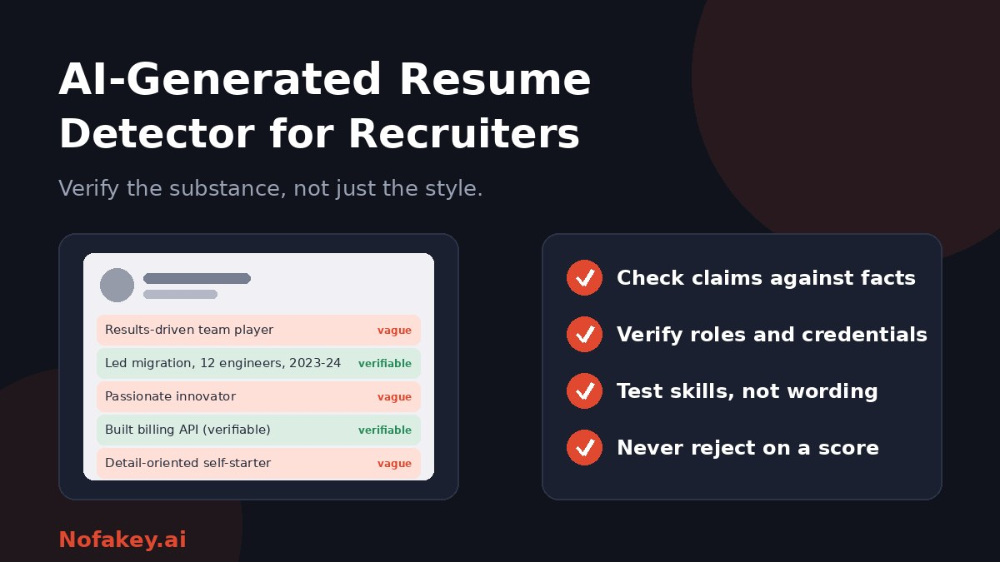

Recruiters are buried in resumes that look impressively similar. Some were polished with AI, a few were invented by it, and many were written by people who simply followed the same resume advice. AI resume detectors promise a quick sort, but resumes are one of the hardest documents for them to judge. This guide explains why, and what recruiters can do that works better.
Why resumes are hard for detectors
- Little text. Bullet points and short phrases give a detector few patterns to measure.
- Standard phrasing. Resumes use conventional verbs and formats by design, so human and AI versions look alike.
- Heavy editing. Most candidates mix their own words, templates, grammar tools and AI suggestions.
- Different from the training data. Detectors are often built and tested on essays and articles, not resumes.
- Template overlap. Resume builders create similar structure and wording whether or not AI is involved.
Academic researchers have started testing this directly. At least one benchmark of resumes labelled as authentic, AI-enhanced or fully AI-generated reported weak results for off-the-shelf detectors, with the biggest failures on AI-enhanced resumes. Vendors often claim high accuracy, but those numbers usually come from other kinds of text. For the general picture, see are AI detectors accurate?
Not all AI resumes are the same
| Type | What it is | Should it worry you? |
|---|---|---|
| Authentic | Written by the candidate, with ordinary tools such as spell-check | No |
| AI-enhanced | Real experience, with AI used to edit wording, fix grammar or match keywords | Usually not, if the facts are true |
| AI-generated and padded | AI expands thin experience into impressive-sounding but vague claims | Yes, because the substance may not be there |
| Fabricated | Jobs, skills, degrees or achievements invented or exaggerated | Yes. This is the real integrity risk, however it was written |
The useful question is not "did AI touch this?" but "is it true, and can this person do the job?"
Signs worth checking in a resume
These are prompts for verification, not proof. Many appear in human resumes too.
| Sign | What it looks like | What to do |
|---|---|---|
| Vague achievements | "Drove results" or "improved efficiency" with no scope, team size or outcome | Ask for specifics: what, how, for whom, and what changed |
| Buzzword stacking | Repeated "results-driven," "detail-oriented," "innovative" | Look past the adjectives to the evidence |
| Job description echo | Wording that mirrors your posting closely, bullet by bullet | Common and often harmless, since tailoring is standard advice |
| Inconsistent timeline | Dates, titles or locations that do not match other sources | Check against their professional profile and references |
| Impossible breadth | Senior-level skills across many unrelated areas with little time spent in each | Probe depth in one or two areas |
| Repeated structure | Every bullet follows the same pattern and length | Natural for templates, so look at the content |
| Leftover formatting | Stray symbols or markup when you paste the text into a plain editor | A hint that text was pasted from a chatbot unedited, though not proof |
| Hidden text | Invisible or tiny text that does not appear on the page but shows in plain text | Treat as a reason for closer review, since it may be aimed at automated screening |
Example (made up)
Vague: "Results-driven professional who spearheaded innovative solutions to drive organisational excellence."
Verifiable: "Led a team of four to move our customer database to a new system between March and June, with no downtime."
The second can be checked with a reference. That is the kind of line to look for.
Verify, don't just detect
Checking facts works whether or not AI was used. Build a light-touch verification routine:
- Pick two or three claims that matter most for the role, such as a key project, a certification or a leadership claim.
- Cross-check with other sources: the candidate's professional profile, portfolio, published work or code samples.
- Confirm employment and credentials through proper channels and with the candidate's consent, following your region's rules.
- Use references well. Contact referees using details you find yourself, and ask about specific responsibilities.
- Ask the candidate to walk you through a project in detail: goals, constraints, mistakes and results.
- Test the skills that matter with a short, job-relevant exercise or work sample, in a way that is fair and accessible.
- Record what you verified, not just what you suspected.
Build a screening process that does not depend on detection
- Screen on job-relevant criteria, using a consistent scorecard.
- Put short skills checks early, so polish matters less and substance matters more.
- Standardise questions so candidates are compared fairly.
- Write down your AI policy for applications. For example: "AI may be used for editing, but all content must be accurate and about your own experience."
- Give candidates a chance to explain any inconsistency before a decision.
- Keep humans in the loop. Automated rejections based on AI-likelihood are risky.
Fairness and risk
- Watch for bias. Careful or formal writing, and non-native English, can be flagged more often. Test any tool on your own samples before use.
- Respect accessibility. Candidates may rely on assistive tools and editing support for good reasons.
- Tailoring is normal. Adjusting a resume to a posting is standard career advice, so matching keywords is not evidence of dishonesty.
- Mind data protection. Resumes are personal data. Check what a third-party tool stores, for how long and whether submissions are used for training.
- Check local rules. Some places regulate automated tools in hiring, with requirements such as notice, audits or human review. Ask qualified employment counsel. This is general information, not legal advice.
If you still want a detection tool
Treat it like any screening aid and test it first:
- Run a calibration test on resumes whose origin you know, including AI-enhanced ones, and count errors in both directions.
- Prefer tools that explain results and state their limits, instead of showing a single score.
- Disable automatic actions. No auto-rejects, rankings or flags based on the score alone.
- Review vendor claims carefully. Accuracy figures are usually from the vendor's own tests.
- Review data handling before uploading candidate files.
Our guide to a bulk AI content checker for agencies has a calibration process that suits recruiting teams as well. For letters rather than resumes, see how to detect AI-generated cover letters, and for the wider hiring workflow, including identity checks for remote hires, read AI detection tools for HR teams.
For candidates reading this
- Use AI to edit, not to invent. Every line should be true and something you can discuss.
- Prefer specifics to adjectives: projects, scope, results.
- Tailor honestly. Reflect the posting where it fits your real experience.
- Avoid hidden text and tricks. They can get you rejected and are not worth the risk.
- Be ready to explain every claim.
- Follow any employer rules on AI use and disclosure. Wording ideas are in how to label AI-generated content.
Conclusion
An AI resume detector is a weak tool for a hard job. Resumes are short and standardised, and the line between AI-enhanced and fabricated matters more than whether AI was used. Recruiters get better results by verifying claims, testing real skills and treating any score as a clue. If a job message or offer looks suspicious, paste it into our free checker for a quick first read, and find more guides on the Nofakey.ai blog.
Frequently asked questions
Do AI resume detectors work?
Not reliably. Resumes are short, structured and full of standard phrases, which gives detectors little to analyse. Results are probabilistic and can be wrong in both directions, especially on resumes that were edited or only lightly AI-assisted.
What is the difference between an AI-enhanced and an AI-generated resume?
An AI-enhanced resume starts from the candidate’s real experience and uses AI to edit or tailor it. An AI-generated or fabricated resume invents or exaggerates content. The second is the real integrity problem.
How can recruiters verify a resume instead of detecting AI?
Check claims against independent facts: employment dates, role titles, credentials, portfolios and references, then ask the candidate to explain specific achievements in their own words.
Should recruiters reject candidates who used AI on their resume?
Not automatically. Many candidates use AI for formatting, grammar or keywords. What matters is whether the content is true and whether the candidate can do the job.
Is hidden text in a resume a problem?
It can be. Some candidates add invisible text to try to influence automated screening. Viewing the resume as plain text can reveal it, and it is reasonable to treat it as a reason for closer review.
Got a suspicious job message or offer to check?
Run it through the checker